УКАЗАНИЯ
ПО СТРОИТЕЛЬСТВУ,
РЕМОНТУ И СОДЕРЖАНИЮ
ГРАВИЙНЫХ ПОКРЫТИЙ
ВСН 7-89
«ТРАНСПОРТ» 1990
СОДЕРЖАНИЕ
Утверждены
Министерством автомобильных
дорог РСФСР
14 июля 1989 г.
УКАЗАНИЯ
ПО СТРОИТЕЛЬСТВУ,
РЕМОНТУ И СОДЕРЖАНИЮ
ГРАВИЙНЫХ ПОКРЫТИЙ
ВСН 7-89
МОСКВА «ТРАНСПОРТ» 1990
Указания содержат основные положения по строительству, ремонту и содержанию дорожных покрытий, требования к минеральным, органическим и гигроскопическим обеспыливающим материалам, правила производства работ, а также вопросы контроля качества работ, техники безопасности и охраны природной среды. В приложениях приведены методики по контролю плотности гравийных покрытий, запыленности воздуха, оценке водостойкости технических лигносульфонатов и другие материалы.
Разработаны взамен Указаний по строительству, ремонту и содержанию гравийных покрытий (ВСН 7-85) и с учетом Временной классификации работ по ремонту и содержанию автомобильных дорог общего пользования, утвержденной Минавтодором РСФСР 16.06.88, и Рекомендаций по применению лигнодора для повышения транспортно-эксплуатационных качеств гравийных покрытий, утвержденных Минавтодором РСФСР 08.04.86.
При составлении Указаний использованы материалы Московского, Ростовского-на-Дону, Свердловского и Хабаровского научно-производственных центров НПО Росдорнии, а также Пермского филиала НИИБ Минлеспрома СССР.
|
Министерство автомобильных дорог РСФСР |
Ведомственные строительные нормы |
ВСН 7-89 |
|
Указания по строительству, ремонту и содержанию гравийных покрытий |
Взамен ВСН 7-85 |
1.1. Гравийными называются дорожные покрытия из песчано-гравийных или песчано-гравийно-щебеночных материалов, зерновой состав которых обеспечивает получение плотных смесей.
1.2. Гравийные покрытия строят на автомобильных дорогах IV и V категорий при интенсивности движения: до 300 авт./сут в районах с сухим и жарким климатом и до 500 авт./сут с умеренным. На дорогах с интенсивностью движения свыше 500 авт./сут следует применять покрытия из гравийных (щебеночных) материалов, обработанных органическими вяжущими.
При технико-экономической целесообразности строительство гравийных покрытий допускается на дорогах III категории, которые в дальнейшем могут использоваться в качестве оснований при строительстве дорожных одежд облегченного типа.
1.3. Автомобильная дорога с гравийным покрытием должна обеспечивать в пределах установленных межремонтных сроков службы бесперебойный круглогодичный, безопасный и удобный проезд автомобилей с установленными скоростями и нагрузками.
1.4 Для обеспечения требуемой работоспособности покрытий, улучшения условий движения и снижения загрязнения окружающей среды целесообразно верхний слой (слой износа) устраивать с применением обеспыливающих материалов как при строительстве, так и в процессе эксплуатации дорог.
1.5. Строительство автомобильных дорого с гравийными покрытиями осуществляют по утвержденным техническим проектам независимо от значения дорог и их категорий.
1.6. Конструкцию гравийных покрытий назначают на основании данных изысканий и технико-экономических расчетов с учетом состава и интенсивности движения, согласно действующим СНиПам, а также с учетом обеспеченности района местными гравийными материалами.
1.7. Прочность и долговечность гравийных покрытий обеспечивают не только правильной их конструкцией, но и надлежащим качеством земляного полотна, которое должно полностью соответствовать требования СНиПов.
1.8. Гравийные покрытия устраивают серповидного (рис. 1.1, а) или полукорытного (рис. 1.1, б) профиля. Полукорытный профиль применяют в хорошо дренирующих грунтах или при устройстве дополнительных слоев из дренирующих грунтов (с коэффициентом фильтрации не менее 1 м/сут) на всю ширину земляного полотна.
Поперечные уклоны проезжей части назначают в пределах 25 - 40 ‰. Обочины устраивают с поперечным уклоном 40 - 60 ‰.
|
Внесены дорожным научно-исследовательским и производственно-технологическим объединением Росдорнии |
Утверждены Министерством автомобильных дорог РСФСР 14.07.89 |
Срок введения 01.01.91 |
Рис. 1.1. Поперечные профили:
В - ширина земляного полотна; а - ширина обочины; b - ширина проезжей части
Рис. 1.2. Примеры конструкций дорожных одежд с гравийными покрытиями:
а - однослойным; б - двухслойным; в - двухслойным на дополнительном песчаном слое; г - трехслойным; 1 - песчано-гравийно-щебеночная смесь (см. табл. 2.1, смесь № 3 и 5); 2 - слой из песчано-гравийно-щебеночной смеси, обработанной обеспыливающими материалами (4 - 6 см); 3 - песчано-гравийная смесь (см. табл. 2.1, смесь № 1, 2, 4, 6, 7); 4 - песок; 5 - гравийная смесь (см. табл. 2.3, смесь № 1 и 2); 6 - грунт земляного полотна
1.9. Толщину гравийного покрытия назначают по расчету в соответствии с Инструкцией по проектированию дорожных одежд нежесткого типа, а также указаний действующих СНиПов. Примеры конструкций дорожных одежд с гравийными покрытиями показаны на рис. 1.2.
1.10. Наименьшая толщина слоя гравийного покрытия (основания) должна в 1,5 раза превышать размер наиболее крупных зерен используемого материала. При этим она не должна быть менее 8 см при укладке на прочное основание и не менее 15 см на песок.
1.11. Работы по ремонту и содержанию гравийных покрытий преследуют цель поддержания и улучшения транспортно-эксплуатационных качеств дороги с учетом интенсивности и состава автомобильного движения. Виды и характер этих работ регламентированы действующей Инструкцией по классификации работ по ремонту и содержанию автомобильных дорог.
Ремонт автомобильных дорог с гравийными покрытиями осуществляют по утвержденным проектам. В исключительных случаях ремонт небольших участков дороги допускается производить по ведомостям дефектов и сметам (сметно-финансовым расчетам).
Работы по содержанию гравийных покрытий планируют в денежном выражении в соответствии с действующими нормативами.
2.1.1. Готовые песчано-гравийные или песчано-гравийно-щебеночные смеси характеризуют показателями качества по зерновому составу, форме зерен прочности, содержанию зерен слабых пород, содержанию дробленых зерен в смеси, содержанию пылевидных и глинистых частиц, морозостойкости, пластичности, водостойкости.
2.1.2. Зерновой состав готовых смесей должен отвечать требованиям (ГОСТ 25607-83), указанным в табл. 2.1.
2.1.3. Марки по прочности и морозостойкости, водостойкости и пластичности щебня и гравия, входящих в состав смесей, должны соответствовать требованиям, указанным в табл. 2.2.
2.1.4. Песок, предназначенный для приготовления смесей для покрытий должен иметь модуль крупности Мк не ниже 1,7, для оснований - не ниже 22 и удовлетворять требованиям ГОСТ 8736-85.
2.1.5. Для дополнительных слоев оснований (дренирующих, морозозащитных и т. п.) применяют песчано-гравийные или песчано-гравийно-щебеночные смеси, зерновой состав которых отвечает требованиям табл. 2.3.
Таблица 2.1
|
№ готовой смеси |
Полный остаток, % по массе, на ситах с размером отверстий, мм |
|||||||||
|
70 |
40 |
20 |
10 |
5 |
2,5 |
0,63 |
0,16 |
0,05 |
||
|
0 - 70 |
1 |
0 - 20 |
20 - 60 |
40 - 80 |
55 - 85 |
65 - 85 |
75 - 90 |
85 - 95 |
95 - 100 |
95 - 100 |
|
0 - 70 |
2 |
0 - 20 |
10 - 35 |
20 - 50 |
30 - 65 |
40 - 75 |
50 - 85 |
70 - 90 |
90 - 95 |
97 - 100 |
|
0 - 40 |
3 |
- |
0 - 15 |
20 - 40 |
35 - 60 |
45 - 70 |
55 - 80 |
70 - 90 |
75 - 92 |
80 - 93 |
|
0 - 40 |
4 |
- |
0 - 15 |
40 - 60 |
60 - 80 |
70 - 85 |
75 - 85 |
85 - 95 |
93 - 97 |
95 - 100 |
|
0 - 20 |
5 |
- |
- |
0 - 15 |
10 - 35 |
25 - 50 |
35 - 65 |
55 - 80 |
65 - 90 |
75 - 92 |
|
0 - 20 |
6 |
- |
- |
0 - 15 |
20 - 40 |
40 - 60 |
55 - 70 |
75 - 85 |
89 - 95 |
96 - 100 |
|
0 - 20 |
7 |
- |
- |
0 - 15 |
40 - 70 |
60 - 85 |
70 - 95 |
85 - 97 |
90 - 97 |
92 - 97 |
Примечания. 1. Смеси № 3 и 5 предназначены для верхних слоев покрытий, смеси № 1, 2, 4, 6, 7 - для нижних слоев покрытий и оснований.
2. Допускается применение песчано-гравийных смесей, выпущенных по ГОСТ 23735-79, отвечающих требованиям табл. 2.1.
3. Допускается приготовление смеси из двух и более разновидностей материалов по происхождению.
4. Для лучшего уплотнения и повышения сдвигоустойчивости покрытия в гравийный материал, содержащий более 50 % окатанных зерен, рекомендуется добавлять 20 - 30 % щебня (щебня из гравия) по массе.
5. Для районов с избыточным увлажнением (I - III дорожно-климатических зон) содержание частиц менее 0,05 мм для покрытий принимают по меньшему значению, а для сухих районов (IV и V зон) - по большему.
6. Карьерные гравийные материалы, не удовлетворяющие требованиям, подлежат обогащению путем грохочения, дробления крупных зерен, добавления щебня, песка и недостающих мелких частиц.
Таблица 2.2
|
Покрытие |
Основание |
|||
|
Категория автомобильной дороги |
||||
|
IV |
V |
III |
IV и V |
|
|
Марки по прочности при раздавливании в цилиндре в водонасыщенном состоянии, не ниже: |
|
|
|
|
|
щебня из изверженных и метаморфических пород |
800 |
600 |
600 |
600 |
|
щебня из осадочных пород |
600 |
400 |
400 |
200 |
|
гравия и щебня из гравия |
Др 12 |
Др 16 |
Др 16 |
Др 24 |
|
Марки по истираемости, не менее |
ИIII |
ИIII |
ИIII |
ИIV |
|
» » морозостойкости Мрз для районов со среднемесячной температурой воздуха наиболее холодного месяца, °С, не ниже: |
|
|
|
|
|
от 0 до -5 |
15 |
- |
15 |
- |
|
» -5 » -15 |
25 |
15 |
25 |
- |
|
» -15 » -30 |
50 |
25 |
50 |
15 |
|
ниже -30 |
75 |
50 |
75 |
25 |
|
Марки по водостойкости, не ниже |
1 |
2 |
1 |
2 |
|
» » пластичности, » » |
Пл 1 |
Пл 2 |
Пл 1 |
Пл 3 |
Примечание. Характеристики показателей по маркам, приведенным в табл. 2.2, изложены в ГОСТ 25607-83, 8267-82, 10260-82, 8268-82. Определение физико-механических свойств щебня и гравия, входящих в состав готовых смесей, проводят по ГОСТ 8269-87.
Таблица 2.3
|
Полный остаток, % по массе, на ситах с размером отверстий, мм |
|||||||||
|
70 |
40 |
20 |
10 |
5 |
2,5 |
0,63 |
0,16 |
0,05 |
|
|
1 |
0 |
10 - 20 |
20 - 40 |
25 - 65 |
40 - 75 |
60 - 85 |
70 - 90 |
90 - 95 |
97 - 100 |
|
2 |
0 |
0 - 5 |
0 - 10 |
10 - 40 |
30 - 70 |
45 - 80 |
60 - 85 |
75 - 92 |
97 - 100 |
Для дорог III категории содержащийся в таких смесях щебень должен иметь марку по прочности не ниже 200, а гравий (щебень из гравия) - марку не ниже Др24.
2.2. Органические материалы для обеспыливания
2.2.1. Для обеспыливания и улучшения гравийных покрытий применяют: нефтяные дорожные жидкие битумы медленно густеющие (МГ 40/70) и густеющие со средней скоростью (СГ 40/70), отвечающие требованиям ГОСТ 11955-82, разжиженные до вязкости не более 25 с по стандартному вискозиметру; эмульсии битумные дорожные анионные (ЭБА-3), отвечающие требованиям ГОСТ 18659-81.
Можно применять также сырые нефти, топочный мазут, обработанные масла и другие подобные материалы, вязкость которых по стандартному вискозиметру составляет не более 25 с.
2.2.2. Лигносульфонаты технические (ЛСТ марки В, лигнодор, сульфитный щелок), применяемые для обеспыливания и улучшения гравийных покрытий, должны удовлетворять требованиям, приведенным в табл. 2.4.
Таблица 2.4
|
Лигносульфонаты технические |
|||
|
Типа В (ЛСТ) |
Лигнодор (ЛГД) |
Сульфитный щелок (СЩ) |
|
|
Внешний вид и цвет |
Густая жидкость темно-коричневого цвета |
Коричневая жидкость |
|
|
Массовая доля сухих веществ, %, не менее |
50 |
45 - 48 |
10 |
|
Массовая доля золы к массе сухих веществ, %, не более |
20 |
- |
- |
|
Массовая доля нерастворимых в воде веществ к массе сухих веществ, %, не более |
0,8 |
0,8 |
1,3 |
|
рН 20 %-ного раствора, не менее |
4,5 |
5,0 |
4,5 |
|
Предел прочности при растяжении высушенных образцов, МПа, не менее |
0,4 |
0,8 |
- |
|
Вязкость условная на вискозиметре ВЗ-1, с, не более |
- |
150 |
- |
|
То же на стандартном вискозиметре, с, не более |
- |
120 |
- |
|
Плотность, кг/м3, не менее |
1240 |
1230 |
- |
|
Массовая доля кальция, %, не менее |
- |
1,2 |
- |
|
Водостойкость, см/мин, не более |
- |
0,6 |
- |
Примечания. 1. Лигносульфонаты технические (ЛСТ) изготавливают целлюлозно-бумажные предприятия (комбинаты, заводы, объединения) Минлеспрома СССР в соответствии с требованиями ТУ 13-0281036-05-89, а лигнодор (ЛГД) изготавливает и отгружает Сяський ЦБК Минлегпрома СССР в соответствии с ТУ 13-3900001-22-86 «Лигносульфонаты технические модифицированные «Лигнодор».
2. Сульфитный щелок (СЩ) является отходом предприятий Минлеспрома СССР при получении целлюлозы из древесины сульфитным способом. В связи с повышенной коррозионной активностью его применяют только в нейтрализованном виде (см. приложение 4).
3. Можно применять лигносульфонаты и меньшей концентрации, но при этом следует подбирать такую норму расхода, чтобы эффективность этих веществ удовлетворяла требованиям п. 4.2.3.
2.3. Гигроскопические материалы
2.3.1. Для обеспыливания гравийных покрытий применяют кальций хлористый технический (ГОСТ 450-77), кальций хлористый, ингибированный фосфатами (ТУ 6-18-173-77), техническую поваренную соль (ГОСТ 13830-84), техническую соль сильвинитовых отвалов, а также концентрированные рассолы (в том числе природные) и пластовые солевые воды.
2.3.2. Хлористый кальций должен удовлетворять требованиям, приведенным в табл. 2.5.
Таблица 2.5
|
Хлористый кальций технический |
|||||||
|
кальцинированный |
плавленый |
жидкий |
ингибированный фосфатами |
||||
|
Высший сорт |
I сорт |
I сорт |
II сорт |
I сорт |
II сорт |
||
|
Внешний вид |
Порошок, гранулы белого цвета |
Гранулы, чешуйки от белого до серого цвета |
Раствор прозрачный или мутный |
Чешуйки серого цвета |
|||
|
Массовая доля хлористого кальция, %, не менее |
96,5 |
90 |
78 |
76 |
38 |
35 |
72 |
|
Массовая доля натрия в пересчете на хлористый натрий, %, не более |
1,0 |
Не нормируется |
2,0 |
5,0 |
2,5 |
3,0 |
7,0 |
|
Массовая доля нерастворимого в воде остатка, %, не более |
0,1 |
0,5 |
0,2 |
0,5 |
0,03 |
0,15 |
Не нормируется |
|
Массовая доля водорастворимых фосфатов в пересчете на пятиокись фосфора (Р2О5), %, не менее |
Не нормируется |
1,4 |
|||||
2.3.3. Техническая поваренная соль (ГОСТ 13830-84) представляет собой кристаллический хлористый натрий, добываемый из природных месторождений. В зависимости от степени очистки соль может иметь цвет от розового до белого. Для обеспыливания дорог чаще всего ее применяют в виде 20 - 30 %-ного раствора, транспортируют без тары (навалом).
2.3.4. Техническая соль сильвинитовых отвалов представляет кристаллический отход калийных производств. Для целей обеспыливания такая техническая соль должна отвечать следующим требованиям: крупность частиц не должна превышать 5 мм (допускаются отдельные включения до 10 мм); влажность - не более 5 %; содержание NaCl - не менее 90 %; содержание нерастворимого остатка - не более 7 %. Транспортируют техническую соль сильвинитовых отвалов без тары.
2.3.5. Концентрированные рассолы и пластовые солевые воды должны содержать не менее 20 % хлористых солей.
3.1. Основные положения по организации производства работ
3.1.1. Гравийные покрытия строят поточным методом. Бригады по строительству должны включить специализированные звенья по видам работ:
приготовление и транспортирование гравийных смесей;
строительство основания и покрытия.
Состав бригады и их оснащение зависят от объема работ и сроков выполнения работ, а также от принятой технологии и местных условий.
3.1 2. Длину сменных захваток назначают в соответствии с заданным темпом работ, а также с учетом оптимальной скорости потока (200 - 300 м/смену), позволяющей максимально использовать средства механизации.
3.1.3. Продолжительность строительного сезона по устройству дорожных одежд с гравийными покрытиями может не ограничиваться летним периодом, а распространяться и на остальную часть года при условии принятия специальных мер по проведению работ в неблагоприятных погодных условиях.
3.1.4. При использовании в качестве ведущей машины автогрейдера для обеспечения фронта работ материал разрешается вывозить на земляное полотно дороги с заделом на одну-две сменные захватки.
3.2. Подготовительные работы
3.2.1. К строительству гравийных покрытий приступают при полной готовности земляного полотна.
Плотность грунта земляного полотна должна соответствовать требованиям СНиПа. При этом коэффициент уплотнения грунта (т. е. отношение требуемой плотности грунта к максимальной при стандартном уплотнении) верхнего слоя насыпи должен быть не менее 0,95.
3.2.2. Окончательное профилирование поверхности земляного полотна (при серповидном профиле) или устройство полукорыта (при полукорытном профиле) выполняют автогрейдерами.
При устройстве полукорыта отвал автогрейдера устанавливают с углом захвата 45°, углом резания 35 - 40° и углом наклона ножа до 15°. Проверку установки отвала автогрейдера целесообразно производить угломерной линейкой или угломером (рис. 3.1).
Рис. 3.1. Угломер и его установка при замере углов захвата j, резанья g и наклона b:
1 - отвал автогрейдера; 2 - сектор; 3 - уровень; 4 - рейка; 5 - шарнир
3.2.3. Уплотнение дна полукорыта после его окончательного профилирования производят легкими катками с металлическими вальцами или катками на пневматических шинах. В сухую жаркую погоду дно корыта целесообразно полить водой из расчета 1,5 - 2 л/м2.
После выполнения указанных работ производят приемку земляного полотна и полукорыта с составлением акта освидетельствования скрытых работ.
3.2.4. В процессе строительства гравийных покрытий необходимо обеспечивать своевременное выполнение разбивочных работ, цель которых:
проверка соответствия фактических отметок земляного полотна проектным;
обеспечение в натуре проектного поперечного профиля покрытия.
Разбивочные работы выполняют в соответствии с требованиями действующей Инструкции по разбивочным работам при строительстве, реконструкции, ремонте автомобильных дорог и искусственных сооружений.
3.3. Производство работ по строительству гравийных покрытий
3.3 1. Строительство гравийных покрытий включает:
вывозку, распределение и планирование гравийного материала;
послойное уплотнение гравийного материала.
Объем подлежащих вывозке материалов определяют с учетом коэффициента запаса на уплотнение в соответствии с п. 3.2.5.
3.3.2. Необходимое качество гравийных покрытий можно обеспечить лишь при условии применения смесей, удовлетворяющих требованиям п. 2.1. Если разрабатываемый гравийный материал в карьере по зерновому составу не отвечает установленным требованиям, то в этот материал следует добавить недостающие фракции из других карьеров. Смесь приготавливают на карьерных грунтосмесительных установках типа ДС-50Б. На этих же машинах производят перемешивание гравийных смесей с обеспыливающими материалами.
3.3.3. Гравийную смесь, удовлетворяющую требованиям п. 2.1, доставляют на дорогу автомобилями-самосвалами грузоподъемностью 4,5 - 7 т. Приготовление гравийной смеси непосредственно на дороге допускается в виде исключения. При этом производят послойное распределение каждого материала с последующим перемешиванием автогрейдерами, грейдерами, плужными смесителями (рис. 3.2) и другими машинами аналогичного действия.
Рис. 3.2. Плужный смеситель:
1 - передний отвал; 2 - боковой отвал; 3 - передняя балка; 4 - диагональная схватка; 5 - соединительные болты; 6 - задняя балка; 7 - регулировочный болт; 8 - промежуточная балка
В случае недостатка мелких фракций в вывезенном на дорогу гравийном материале его восполняют местным грунтом (супесчаным или суглинистым в зависимости от рекомендаций лаборатории).
В процессе перемешивания необходимо тщательно следить за качеством смеси, не допуская скопления крупных или мелких частиц.
Контроль качества приготовления смеси осуществляет лаборатория.
При применении автогрейдеров готовую гравийную смесь завозят на подготовленное земляное полотно или в полукорыто из расчета требуемой толщины слоя.
Расстояние между штабелями материала выгруженного из автосамосвалов, определяют по формуле
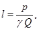
где р - грузоподъемность автомобиля-самосвала, т; g - объемная масса, г/м3; Q - потребное количество материала на 1 м, м3.
Обваловывание штабелей и разравнивание материала автогрейдером производят за 7 - 11 круговых проходов в зависимости от толщины слоя.
Для обеспечения наибольшей производительности автогрейдера при перемещении и разравнивании гравийного материала отвал устанавливают под углом захвата 35 - 45°, резания до 50° и нагона 3 - 4°; окончательное планирование производят при угле захвата 60 - 90°, резания до 60° и угле наклона в зависимости от проектного поперечного профиля.
3.3.5. Уложенный слой покрытия уплотняют самоходными катками с гладкими вальцами статического и вибрационного действия, а также катками на пневматических шинах. Наиболее целесообразны для уплотнения катки на пневматических шинах. При уплотнении верхнего слоя покрытия в качестве тягачей для прицепных катков следует применять тракторы на пневматических шинах.
3.3.6. Гравийная смесь при уплотнении должна иметь оптимальную влажность.
В сухую и жаркую погоду для доведения смеси до оптимальной влажности и обеспечения лучшей ее уплотняемости за 20 - 30 мин до начала уплотнения поверхность слоя поливают водой из расчета 3 - 6 л/м2. В процессе уплотнения производят повторное увлажнение. Общий расход воды в период уплотнения достигает 6 - 12 л/м2 во II и III и 12 - 24 л/м2 в IV и V дорожно-климатических зонах. Для верхнего слоя покрытия с целью создания плотной, прочной и устойчивой коры, а также уменьшения затрат в процессе уплотнения вместо воды следует применять растворы гигроскопических солей или природные рассолы.
3.3.7. Каждый слой покрытия уплотняют вначале самоходными катками с гладкими вальцами массой 5 - 8 т (прикатка), а затем массой 10 т и более (укатка). Максимальная толщина уплотняемого слоя не должна превышать 0,25 м при применении катков с пневматическими шинами и 0,18 м с гладкими вальцами.
3.3.8. Прикатка слоя выполняется проходом катков от краев к середине с перекрытием следа на 1/3 ширины заднего вальца. Скорость движения катка должна быть 1,5 - 2 км/ч. Число проходов катка по одному следу определяется пробной укаткой и колеблется от 3 до 6. Прикатку следует считать законченной, если перед передними вальцами не образуется волна и отсутствует заметная на глаз осадка слоя. При использовании вибрационных катков подкатка производится с выключенным вибрационным вальцом.
После прикатки слоя проверяют его ровность 3-метровой или многоопорной рейкой, а поперечные уклоны - шаблоном с целью установления и исправления дефектных мест на поверхности покрытия или основания.
3.3.9. При укатке слоя число проходов катка (массой 10 т и более) по одному следу также определяют пробной укаткой (оно колеблется от 10 до 25). Начинать уплотнение следует вдоль краев уложенного слоя при скорости движения 3 - 5 км/ч. При последующих проходах каток смещают к середине с перекрытием предыдущего следа на 1/3 ширины, а его скорость может быть повышена до 12 - 15 км/ч. Заканчивать уплотнение рекомендуется при пониженных скоростях. Укатка выполняется по челночной схеме.
Внешними признаками окончания укатки является прекращение осадки уплотняемого слоя от прохода катка и прекращение движения волны перед катком. Контроль уплотнения осуществляет лаборатория.
3.3.10. Для уменьшения износа, повышения транспортно-эксплуатационного состояния покрытий и улучшения санитарно-гигиенических условий окружающей среды при строительстве верхний слой гравийных покрытий обрабатывают обеспыливающими материалами в соответствии с положениями п. 4.2 настоящих Указаний.
3.4. Особенности производства работ при отрицательной температуре воздуха
3.4.1. При организации работ в зимнее время особое внимание должно быть уделено подготовительным мероприятиям, проводимым до наступления морозов. К этим мероприятиям относятся:
подготовка производственных предприятий (баз, карьеров и т. п.) для работы в зимних условиях;
подготовка парка автомобилей и дорожных машин, утепление ремонтных пунктов и организация парков-стоянок с подогревом воды и др.;
мероприятия, обеспечивающие разработку песчаных и гравийных карьеров (например, заблаговременное проведение вскрытых работ, утепление и подготовка забоев, рыхление материалов и т. д.).
3.4.2. В зимний период гравийные покрытия рекомендуется устраивать только серповидного профиля.
Перед началом работ поверхность земляного полотна тщательно очищают от снега и льда. При сильных снегопадах и метелях работы по строительству покрытия прекращают.
Для очистки поверхности земляного полотна от снега и льда рационально использовать автогрейдер с зубчатым ножом. При этом угол резания должен находиться в пределах 35 - 40°, угол захвата 35 - 45° при ледяной корке и 50 - 65° при плотном снеговом покрове.
3.4.3. Условием успешного и качественного выполнения работ при отрицательных температурах является ускорение процессов разработки гравийного материала, обогащения, вывозки, укладки и уплотнения готовых смесей до их смерзания. Необходимо следить за тем, чтобы вывезенная на земляное полотно гравийная смесь не содержала снега и льда.
3.4.4. При невозможности немедленной вывозки и укладки в дело приготовленной в карьере гравийной смеси, а также при заготовке материала впрок во избежание преждевременного смерзания смесь обрабатывают хлористыми солями в количестве 20 - 30 кг/м3 (при температуре до -12°С - хлористым натрием, а ниже - хлористым кальцием).
Хлористые соли вводят в материал в твердом виде или в растворе. Сухую смесь применяют, если естественная влажность гравийного материала больше 0,4 - 0,5 оптимальной. При влажности ниже оптимальной применяют раствор хлористого кальция концентрацией не менее 20 %.
3.4.5. Для распределения материала в зимний период наиболее целесообразно применять самоходные укладчики. При отсутствии специальных укладчиков гравийную смесь разравнивают бульдозером или автогрейдером. Для окончательного профилирования слоя применяют автогрейдеры.
3.4.6. В зимних условиях особое внимание уделяют обеспечению необходимого уплотнения гравийных смесей. Длину сменной захватки выбирают из расчета быстрого разравнивания и уплотнения материалов до их смерзания.
3.4.7. После уплотнения за покрытием должен быть установлен тщательный уход. В районах с частыми оттепелями следует очищать покрытие от снега с тем чтобы талая вода не переувлажняла основание и земляное полотно.
3.4.8. Весной в период максимальной влажности дорожного полотна устанавливают строгий контроль за движением автомобилей по гравийным покрытиям, построенным в зимнее время.
Появившиеся деформации покрытия исправляют после полного оттаивания и просыхания земляного полотна и слоев дорожной одежды.
4.1. Содержание покрытий
4.1.1. Для обеспечения надлежащих транспортно-эксплуатационных качеств необходимо проводить систематические работы по содержанию гравийных покрытий. С этой целью в весенний, летний и осенний периоды осуществляют выравнивание покрытия, устраняют отдельные ямы, колеи и просадки, очищают от «катуна», грязи, производят уход за пучинистыми участками (весной) и в сухой период обеспыливание. В зимний период проводят снегоуборку и борьбу с зимней скользкостью.
4.1.2. Выравнивание гравийного покрытия производят путем профилирования или ремонтного профилирования с добавлением небольшого количества материала. Профилирование преследует цель упущения ровности покрытия (после дождей, в весенний и осенний периоды) и равномерного распределения гравийного материала по поверхности.
Первое профилирование проводят ранней весной (после таяния снега), в результате чего улучшается поверхностный водоотвод, ускоряется просыхание покрытия, ликвидируются колеи глубиной до 2 - 4 см и выравнивается поперечный профиль.
Второе профилирование производят в конце весеннего (влажного) периода для ликвидации вновь образовавшихся деформаций и окончательного выравнивания покрытия.
В летний период профилирование производят по мере надобности после дождей при увлажненном покрытии.
Осенью профилирование производят с таким расчетом, чтобы гравийное покрытие при эксплуатации зимой было ровное, без колей и поперечных волн.
Профилирование выполняют автогрейдерами или грейдерами за один-два прохода по одному месту.
Выравнивание гравийных покрытий и исправление поперечного профиля можно проводить прицепными металлическими или деревянными дорожными утюгами за два-три прохода по одному месту.
Количество профилировок за сезон зависит от интенсивности движения, погодных условий и состояния покрытия. Выполнять работы по профилированию на сухом покрытии не рекомендуется.
4.1.3. При необходимости проводят ремонтное профилирование с кирковкой и добавлением на отдельных участках дороги небольшого количества гравийного или щебеночного материала из расчета до 1,5 м3 на 100 м2 покрытия.
Ремонтное профилирование производят 1 - 2 раза в год с учетом состояния покрытия, интенсивности движения и в основном в весенний или осенний период. При этом профилирование покрытия производят автогрейдером (грейдером) от бровки к середине за два-три прохода по одному месту. При первых проходах нож автогрейдера устанавливают под углом захвата 55 - 60° в сторону оси дороги, а угол наклона принимают в зависимости от проектного поперечного профиля.
4.1.4. В весенний период производят очистку проезжей части от грязи и снежной или ледяной корки по мере ее таяния.
Очистку покрытий от грязи весной производят в течение 3 - 5 дней после освобождения дороги от снега и льда, пока грязь не засохла и легко удаляется автогрейдером или бульдозером.
4.1.5. В период сильного увлажнения земляного полотна и покрытия дорогу (при необходимости) закрывают. Движение следует открывать после просыхания проезжей части и выравнивания ее поверхности. В тех случаях, когда полностью закрыть движение не представляется возможным (уборка урожая, вывоз удобрений и т. п.), организуется патрульное содержание дороги специализированными звеньями или бригадами.
4.1.6. Для обеспечения нормальных условий движения в сухое время года на гравийных и им подобных покрытиях проводят обеспыливание в соответствии с п. 4.2 настоящих Указаний.
4.2. Обеспыливание гравийных покрытий
4.2.1. Пыль образуется в результате износа покрытий под воздействием автомобильного транспорта и климатических условий, а также при загрязнении покрытий автомобилями, въезжающими на проезжую часть с грунтовых дорог.
4.2.2. Наиболее эффективным способом борьбы с пылью на гравийных покрытиях является обработка их обеспыливающими материалами (см. пп. 2.2 и 2.3), обеспечивающая уменьшение износа, сохранение первоначальной ровности, снижение загрязнения атмосферы, улучшение условий движения автомобильного транспорта и санитарно-гигиенического состояния прилегающих к дорогам населенных пунктов.
Ориентировочные нормы расхода обеспыливающих материалов и продолжительность их действия даны в табл. 4.1 (в числителе для I - III, а в знаменателе - для IV и V дорожно-климатических зон). Меньшие нормы расхода относятся к интенсивности движения до 300 авт./сут, большие - 300 авт./сут и более. Продолжительность обеспыливающего действия материалов дана после первой обработки покрытий.
При повторных обработках норму расхода обеспыливающих материалов уменьшают в 2 раза. Повторную обработку производят при появлении первых признаков пылеобразования.
Таблица 4.1
|
Норма расхода на 1 м2 покрытия |
Срок обеспыливающего действия, сут |
|
|
Гигроскопические |
|
|
|
Кальций хлористый технический: |
|
|
|
кальцинированный, кг |
0,6 - 0,7 0,8 - 0,9 |
20 - 40 |
|
плавленый, кг |
0,8 - 0,9 1,0 - 1,1 |
20 - 40 |
|
жидкий, л |
1,3 - 1,7 2,0 - 2,2 |
15 - 25 |
|
Кальций хлористый, ингибированный фосфатами (ХКФ), кг |
0,7 - 0,8 0,9 - 1,0 |
25 - 40 |
|
Техническая поваренная соль (в виде раствора 30 %-ной концентрации), л |
1,5 - 2,2 2,4 - 3,0 |
15 - 20 |
|
Техническая соль сильвинитовых отвалов: |
|
|
|
твердая, кг |
0,8 - 1,2 1,4 - 1,8 |
15 - 25 |
|
жидкая, л |
1,6 - 2,5 2,7 - 3,3 |
15 - 20 |
|
Вода морская лиманная или соленых озер, л |
1,0 - 1,5 1,5 - 2,0 |
3 - 5 |
|
Вода техническая, л |
1,0 - 2,0 |
0,40 - 0,12 (2 - 3 ч) |
|
Органические |
|
|
|
Лигносульфонаты технические (ЛСТ) марки В 50 %-ной концентрации, л |
1,6 - 2,0 1,2 - 1,6 |
20 - 30 |
|
Лигнодор, л |
1,6 - 2,0 1,2 - 1,6 |
40 - 45 |
|
Сульфитный щелок 10 %-ной концентрации, л |
4,0 - 6,0 3,0 - 5,0 |
15 - 20 |
|
Жидкие битумы, л |
0,8 - 1,0 |
30 - 90 |
|
Битумные эмульсии, л |
1,2 - 1,5 |
30 - 90 |
|
Сырые нефти, л |
0,8 - 1,0 |
30 - 90 |
Примечание. Органические материалы (битумы, сырые нефти и др.) применяют при вязкости по стандартному вискозиметру не более 25 с.
4.2.4. Объем работ и количество потребных материалов определяют с учетом длины участков, подлежащих обеспыливанию, норм расхода обеспыливающих материалов и количества обработок за сезон. При этом особое внимание следует уделять участкам, проходящим через населенные пункты, вдоль полей, засеянных сельскохозяйственными культурами, а также около больниц, санаториев, детских учреждений, остановок автобусов, на опасных участках дороги (спуск, подъем, кривые малого радиуса) и т. п.
4.2.5. Необходимое количество обработок за сезон определяют с учетом продолжительности теплого периода, в течение которого наблюдается пылеобразование, и количества дождливых дней:
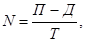
где П - продолжительность теплого периода в году, сут (для ориентировочных расчетов принимают для I дорожно-климатической зоны 30 - 60 сут; для II - 60 - 90; для III - 80 - 110; для IV - 100 - 130; для V дорожно-климатической зоны - 120 - 180 сут); Д -количество дождливых дней за теплый период года (по данным метеослужбы за предыдущие годы); Т - срок действия обеспыливающих материалов, сут (см. табл. 4.1).
4.2.6. Потребное количество обеспыливающих материалов определяют по формуле
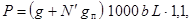
где g - норма расхода обеспыливающих материалов на 1 м2 при первичной обработке, кг (л) (см. табл. 4.1); gп - то же при каждой повторной обработке (gп = 0,5g), кг (л); N¢ - количество повторных обработок за сезон (N¢ = N - 1); b - ширина проезжей части, м; L - длина дороги (участка), км; 1,1 - коэффициент запаса.
4.2.7. В осенне-зимний период дорожные хозяйства подготавливают хранилища к приему обеспыливающих материалов. Важным условием хранения гигроскопических солей является защита их от увлажнения, так как они интенсивно поглощают влагу, а при последующих изменениях влажности и температуры слеживаются. Поэтому барабаны и мешки с хлористым кальцием хранят в закрытых складских помещениях. Хлористый натрий хранят на специальной площадке, имеющей твердое покрытие, под навесом или водонепроницаемой пленкой.
Готовые растворы или рассолы хранят в цистернах вместимостью 20 - 100 м3 или в бетонных закрытых хранилищах.
Органические обеспыливающие материалы хранят в закрытых хранилищах, оборудованных системой подогрева.
4.2.8. Для распределения обеспыливающих материалов наряду с дорожными машинами (КДМ-130, ПМ-8, ДС-39, ПР-130, УР-53, ЭД-404 и др.) могут быть использованы сельскохозяйственные машины и машины, применяемые в горнодобывающей промышленности, приведенные в табл. 4.2.
Таблица 4.2
|
Для жидких материалов |
Для твердых материалов |
||||||||||
|
РЖТ-4 |
РЖТ-8 |
РЖТ-16 |
ГПУ-1 |
ПА-1 |
РУМ-3 |
1-РМГ-4 |
КСА-3 |
РУ-4-10 |
НРУ-0,5 |
Сеялка туковая РТТ-4,2 |
|
|
Вместимость кузова или цистерны, м3 |
4 |
8 |
16 |
25 |
6 |
2,6 |
3,5 |
3,02 |
0,325 |
0,41 |
0,7 |
|
Рабочая скорость, км/ч |
До 10 |
8,5 - 11,4 |
До 10 |
10 |
5-10 |
9 |
11 |
17 |
9 |
7 - 12 |
10 - 12 |
|
Ширина распределения, м: |
|
|
|
|
|
|
|
|
|
|
|
|
с ветрозащитными устройствами |
- |
- |
- |
- |
- |
8 |
8 |
6 |
4 |
6 |
- |
|
без ветрозащитных устройств |
10 |
10 |
10 |
3 |
3 - 6 |
10 - 12 |
12 - 15 |
8 - 10 |
4 - 10 |
8 |
3,5 |
|
Число форсунок |
- |
- |
- |
10 |
13 |
- |
- |
- |
- |
- |
- |
|
Погрузочная высота, м |
- |
- |
- |
- |
- |
2,1 |
1,8 |
2,2 |
1,5 |
1,4 |
1,4 |
|
База |
Трактор |
Автомобиль |
Трактор класса |
Автомобиль |
Трактор класса |
||||||
|
|
Т-150К |
Т-150К |
К-701 |
МАЗ-205 |
ЗИЛ-130 |
1,4 |
1,4 |
ЗИЛ-555 |
0,6 - 1,4 |
0,6 - 1,4 |
0,6 - 0,9 |
|
Производительность, т/ч |
25 |
40 |
80 |
- |
- |
- |
- |
- |
- |
- |
- |
|
Время самозагрузки, мин |
3 - 5 |
5 - 8 |
7 - 8 |
- |
- |
- |
- |
- |
- |
- |
- |
|
Масса, кг |
2200 |
4000 |
6800 |
- |
- |
1500 |
1400 |
4800 |
220 |
30 |
- |
|
Тип |
Прицепной |
Специальный |
Прицепной |
Специальный |
Навесной |
Прицепной |
|||||
|
Область назначения |
Сельское хозяйство |
Горнодобывающая промышленность |
Сельское хозяйство |
||||||||
4.2.9. Обеспыливание гравийных покрытий осуществляют двумя способами: пропиткой покрытия и смешением гравийного материала покрытия с обеспыливающими материалами на дороге.
Пропитку покрытий обеспыливающими материалами чаще всего применяют при содержании, а смешение - при ремонте и строительстве.
4.2.10. Участок покрытия, предназначенный для обработки способом пропитки, в зависимости от его состояния профилируют автогрейдерами (грейдерами) или выравнивают дорожными утюгами с приданием требуемой ровности и поперечного профиля. Одновременно удаляют крупные несвязные частицы гравия.
4.2.11. Розлив растворов производят на покрытие, материал которого имеет влажность Wф, равную или меньшую оптимальной Wопт. При норме более 1,5 л/м2 розлив осуществляют за два-три приема. Каждый последующий розлив производят после того, как раствор предыдущего полностью впитается в покрытие. Время между поливами определяют исходя из погодных условий. Оно составляет, как правило, от 20 до 120 мин.
Скорость движения распределительных средств не должна превышать 8 - 12 км/ч, а длина захватки - не более 1 км.
4.2.12. Розлив органических обеспыливающих материалов желательно производить при температуре, обеспечивающей нормальное впитывание (табл. 4.3).
Таблица 4.3
|
Марка |
Температура розлива, °С |
|
|
Разжиженные нефтяные битумы |
- |
50 - 70 |
|
Сырая нефть |
- |
50 - 90 |
|
Лигносульфонат технический, 50 %-ной концентрации |
ЛСТ-В, ЛГД |
30 - 70 |
|
Сульфитный щелок |
- |
Без подогрева |
|
Битумные эмульсии |
Анионные |
» » |
Примечания. 1. Температуру розлива корректируют в зависимости от состояния погодных условий: при более низкой температуре воздуха принимают более высокую температуру материала при розливе и наоборот.
2. Приготовление рабочих растворов лигносульфонатов технических приведено в приложении 5.
4.2.13. Распределение твердых гигроскопических солей производят в следующей последовательности:
разливают воду в количестве 0,5 - 2 л/м2 (при сухом покрытии);
распределяют по поверхности проезжей части твердые соли по норме, приведенной в табл. 4.1.
Работы в этом случае осуществляют в следующем порядке: вывезенную в штабеля гравийную смесь для верхнего слоя покрытия (слоя износа) разравнивают автогрейдером за четыре круговых прохода на всю ширину покрытия; разливают раствор или распределяют твердый обеспыливающий материал в количестве 80 % нормы (нормы, приведенные в табл. 4.1, увеличивают в 3 - 5 раз); тщательно перемешивают смесь, разравнивают и профилируют автогрейдером за 10 круговых проходов; при необходимости в гравийный материал добавляют воду, доведя смесь до оптимальной или близкой к ней влажности; производят уплотнение самоходными катками за 8 - 10 проходов по каждому следу; разливают по поверхности покрытия готовый раствор или распределяют материал в твердом виде в количестве 20 % нормы.
4.2.15. В течение 5 - 7 дней после проведения мероприятий по обеспыливанию регулируют движение транспортных средств для получения равномерно накатанной поверхности и обеспечения лучшего формирования покрытия. Скорость движения автомобилей в этот период не должна превышать 40 км/ч.
4.3. Ремонт покрытия
4.3.1. При ремонте восстанавливают слой износа, ровность покрытия и другие транспортно-эксплуатационные качества, предъявляемые к дороге данной категории. Это достигается путем проведения сплошной ремонтной профилировки с добавлением нового материала в количестве 200 - 800 м3/км, обработки верхнего слоя органическими или гигроскопическими обеспыливающими материалами (методом пропитки или смешения на месте).
4.3.2. Технология работ при проведении сплошной ремонтной профилировки состоит из следующих операций:
перестройки дорожной одежды в местах пучин, просадок;
очистку поверхности покрытия от грунта, грязи, мусора;
киркования проезжей части и предварительного профилирования;
вывозки на покрытие готовой гравийной смеси;
распределения смеси, профилирования и уплотнения.
При перестройке дорожных одежд в местах пучин и просадок в нижние слои укладывают крупный материал (см. табл. 2.1), а в верхний - мелкий. Материал укладывают слоями и тщательно уплотняют катками или трамбовками.
Киркование производят на глубину наибольших неровностей и, как правило, не менее 4 - 5 см. Перед киркованием в сухую погоду покрытие поливают водой в количестве 6 - 12 л/м2.
На спланированную поверхность вывозят готовую гравийную смесь и выгружают в штабеля на обочину. Расстояние между штабелями определяют в зависимости от потребности материала на 1 м (см. п. 3.3.4). При невозможности получения из карьера гравийных смесей требуемого зернового состава их готовят на месте (на дороге) путем добавления и тщательного перемешивания отдельных фракций в соответствии с п. 3.3.3.
По завершении планирования слоя его уплотняют, руководствуясь требованиями п. 3.3 настоящих Указаний.
С целью создания плотного, прочного и устойчивого покрытия материал в процессе уплотнения рекомендуется поливать водными растворами гигроскопических солей 20 - 30 %-ной концентрации с нормой расхода 2 - 3 л/м2.
В процессе укатки и после окончания ее проверяют ровность, поперечный профиль и плотность покрытия.
4.3.3. При проведении ремонта в населенных пунктах, на опасных участках на участках, проходящих вдоль сельскохозяйственных угодий, детских учреждений и т. п. гравийные покрытия обеспыливают методом смешения на дороге в соответствии с рекомендациями, изложенными в п. 4.2.14.
5.1. Общие требования к техническому контролю
5.1.1. Технический контроль при строительстве, ремонте и содержании гравийных покрытий осуществляют в целях:
обеспечения выполнения всех работ с высоким качеством и в полном соответствии с проектно-сметной и нормативно-технической документацией;
обеспечения соответствия качества применяемых материалов требованиям проекта технических условий, стандартов и других нормативных документов;
проверки объемов выполненных работ по строительству, ремонту и содержанию отдельных участков или дороги в целом;
своевременного производства промежуточных приемок выполненных работ и правильного ведения производственно-технической документации.
5.1.2. Технический контроль, приемку и оценку качества выполненных работ при строительстве и ремонте гравийных покрытий осуществляют в соответствии с действующими Правилами приемки работ.
Качество содержания гравийных покрытий оценивают в соответствии с действующей Инструкцией по оценке качества и содержания автомобильных дорог.
5.1.3. Технический контроль при строительстве, ремонте и содержании гравийных покрытий должен охватывать все стадии работ и включать контроль за: подготовительными работами; качеством приготовления гравийных смесей, органических и гигроскопических обеспыливающих материалов; устройством конструктивных слоев и проведением мероприятий по профилированию и обеспыливанию гравийных покрытий.
5.2. Контроль качества подготовительных работ
5.2.1. При строительстве (ремонте - при изменении плана и профиля дороги) гравийных покрытий контроль за подготовительными работами состоит в проверке ширины, поперечных уклонов, ровности поверхности и качества уплотнения земляного полотна или дна полукорыта.
5.2.2. При ремонте и содержании гравийных покрытий в подготовительный период осуществляют контроль качества подготовки поверхности существующей дорожной одежды к проведению намеченных мероприятий по повышению транспортно-эксплуатационных качеств дорожных покрытий.
5.3. Контроль качества готовых смесей и материалов
5.3.1. При приготовлении гравийных смесей производят контроль качества исходных минеральных материалов и готовых смесей.
Готовые песчано-гравийные или песчано-гравийно-щебеночные смеси должны удовлетворять требованиям ГОСТ 25607-83, а щебень и гравий - ГОСТ 8267-82 и 10260-82 и настоящих Указаний.
5.3.2. Контроль качества готовых смесей производят в соответствии с требованиями ГОСТ 23735-79. Кроме того, производят периодическое определение пластичности зерен крупности менее 0,16 (0,63) мм и водостойкости - один раз в квартал (ГОСТ 25607-83).
5.3.3. При приготовлении гравийных смесей контролируют количество добавляемых минеральных и обеспыливающих материалов и качество готовой смеси.
5.3.4. Контроль качества обеспыливающих материалов осуществляют в соответствии с требованиями действующих ГОСТов и пп. 2.2 и 2.3 настоящих Указаний.
Таблица 5.1
|
Концентрация раствора, % |
|||||||
|
20 |
25 |
30 |
35 |
40 |
45 |
50 |
|
|
Плотность при 15 °С, кг/м3 |
1180 |
1230 |
1280 |
1330 |
1380 |
1430 |
1480 |
|
Содержание безводного хлористого кальция на 1000 л раствора, кг |
235 |
310 |
385 |
465 |
550 |
640 |
730 |
При применении растворов хлористого кальция контроль их концентрации производят ареометром по плотности. Плотность и содержание хлористого кальция в зависимости от концентрации раствора приведены в табл. 5.1.
При применении лигносульфонатов технических (ЛСТ марки В, лигнодора, сульфитного щелока) их водостойкость определяют по методике, изложенной в приложении 6 настоящего документа.
5.4. Контроль качества гравийных покрытий
5.4.1. При строительстве и ремонте гравийных покрытий контролируют ширину покрытия, толщину покрытия, высотные отметки по оси, поперечный уклон, ровность покрытия, качество уплотнения.
Порядок контроля и количество измерений на законченном строительном или ремонтном участке определены действующими Правилами приемки работ.
5.4.2. Степень уплотнения гравийных покрытий проверяют баллонным плотномером КП-1120 в трех поперечниках на каждом километре (или участке длиной менее 1 км) дороги путем измерений фактической плотности гравийного материала по оси и в 1 - 1,5 м от кромки покрытия.
На каждом контролируемом километре (участке) поперечники назначают в середине участка и на расстоянии, равном 1/4 его длины от концов участка.
Порядок определения степени уплотнения прибором КП-120 изложен в приложении 1 настоящего документа.
При отсутствии прибора КП-120 степень уплотнения гравийных покрытий проверяют методом замещения объема сухим песком (метод «лунки») или с помощью 10 - 18-тонного катка, после прохода которого на поверхности не должно оставаться заметного следа.
5.4.3. При содержании гравийных покрытий осуществляют контроль качества профилирования и обеспыливания.
5.4.4. Качество профилирования оценивают путем измерения ровности гравийного покрытия прибором ТХК-2, установленным на автомобиле типа УАЗ-452 или ПАЗ-672. Измерение ровности производят при скорости движения автомобиля 50 км/ч.
Оценку качества профилирования гравийных покрытий следует осуществлять по табл. 5.2.
Таблица 5.2
|
Норма ровности покрытия, см/км, при измерении толчкомером ТХК-2, установленным на автомобиле типа |
||
|
УАЗ-452 |
ПАЗ-672 |
|
|
«Отлично» |
£ 200 |
£ 230 |
|
«Хорошо» |
201 - 280 |
231 - 320 |
|
«Удовлетворительно» |
281 - 400 |
321 - 460 |
|
«Неудовлетворительно» |
> 400 |
> 460 |
Примечание. При применении других типов автомобилей следует установить корреляционную зависимость с приведенными в табл. 5.2 данными.
5.4.5. при производстве работ по обеспыливанию гравийных покрытий следят за соблюдением нормы и равномерности распределения обеспыливающих материалов по поверхности проезжей части.
Оценки состояния покрытия по пылимости приведены в табл. 5.3.
Таблица 5.3
|
Уровень запыленности воздуха, мг/м3 |
Состояние покрытия по пылимости |
Уровень запыленности воздуха, мг/м3 |
|
|
Непылящие |
£ 3 |
Среднепылящие |
10 - 60 |
|
Слабопылящие |
3 - 10 |
Сильнопылящие |
> 60 |
Обработку гравийных покрытий следует производить при пылящем состоянии покрытия, причем в населенных пунктах при уровне запыленности 1 - 2 мг/м3, а на остальных участках - 10 - 60 мг/м3. Фактический уровень запыленности воздуха на отдельных участках дороги определяют с помощью аспирационного прибора по методике, изложенной в приложении 2.
6.1. Техника безопасности
6.1.1. При строительстве, ремонте и содержании гравийных покрытий должны соблюдаться общие требования, предусмотренные действующими Правилами техники безопасности при строительстве, ремонте и содержании автомобильных дорог, а также требования Инструкции по организации движения и ограждению мест производства дорожных работ.
6.1.2. При работе с добавками дегтей, смол и других подобных материалов следует руководствоваться Типовой инструкцией по охране труда при работе с пеками (Минавтодор РСФСР).
Обслуживающий персонал должен быть обеспечен спецодеждой, средствами защиты органов дыхания, глаз и кожи рук согласно Типовым отраслевым нормам бесплатной выдачи спецодежды, спецобуви и предохранительных приспособлений, утвержденных постановлением Государственного Комитета СССР по труду и социальным вопросам и Президиума ВЦСПС.
6.2. Охрана природной среды
6.2.1. При строительстве, ремонте и содержании гравийных покрытий должны решаться вопросы как по повышению транспортно-эксплуатационных качеств дороги, так и по защите окружающей среды и рациональному использованию природных ресурсов. При этом возникает необходимость решения следующих основных задач: защиты людей от вредного воздействия транспортного шума, газов и пыли; сохранения или улучшения существующего ландшафта, защиты окружающей местности от загрязнения; защиты поверхностных и грунтовых вод от загрязнения обеспыливающими и другими веществами, применяемыми при содержании дорог; сохранения существующего растительного и животного мира; предотвращения или борьбы с водной и ветровой эрозией, обеспечения устойчивости склонов и земляного полотна на оползневых участках; сокращения площади отводимых земель, прежде всего ценных сельскохозяйственных угодий; обеспечения благоприятных условий для использования расположенных рядом с дорогой земель в сельском хозяйстве; сохранения исторических, культурных и архитектурных сооружений.
6.2.2. При строительстве и ремонте гравийных покрытий следует строго соблюдать требования проектной документации по вопросу обеспечения охраны окружающей среды.
6.2.3. При использовании минеральных материалов из притрассовых карьеров для ремонтных мероприятий необходимо соблюдать технологические правила производства продукции и проведение технической и биологической рекультивации отработанных площадей в установленные сроки.
6.2.4. Твердые гигроскопические соли должны храниться только в закрытых складских помещениях, имеющих полы и дренажную систему.
Допускается хранение солей в буртах на специальных площадях, имеющих твердое двускатное покрытие из каменных материалов, обработанных органическими вяжущими. По периметру площадки устраивают укрепленный ровик для сбора и отвода воды в водосборный колодец. Бурты соли должны покрываться специальными тентами из полиэтиленовой пленки или другого подобного материала.
6.2.5. Растворы гигроскопических солей и жидкие технические лигносульфонаты хранят в стальных или бетонных резервуарах, исключающих попадание обеспыливающих материалов в почву.
6.2.6. При хранении гигроскопических материалов и технических лигносульфонатов необходимо соблюдать следующие правила:
хранилища не должны располагаться в зоне защиты питьевой воды и ближе 100 м от других водоемов;
уровень в хранилищах необходимо контролировать один раз в неделю;
при обнаружении утечек срочно их устранять;
состояние хранилища проверяют один раз в год и фиксируют в специальном журнале.
6.2.7. При распределении гигроскопических и органических обеспыливающих материалов необходимо соблюдать следующие правила:
рабочие органы распределительных средств должны быть отрегулированы таким образом, чтобы исключить попадание обеспыливающих материалов за пределы бровки земляного полотна;
строго следить за нормой распределения;
в населенных пунктах запрещается производить обеспыливание солями в мелкодисперсном виде (порошке);
при пересечении рек, ручьев или других водных преград участки дорог длиной по 100 м с каждой стороны от моста (трубы), а также участки, проходящие в зоне охраны питьевой воды и вдоль других водоемов, расположенных на расстоянии до 100 м, обеспыливают только органическими вяжущими материалами в виде битума или битумной эмульсии.
6.2.8. В целях уменьшения или предотвращения коррозионного действия хлористых солей предпочтение следует отдавать ингибированным солям, например хлористому кальцию фосфотированному (ХКФ).
Сульфитный щелок применяют только в нейтрализованном виде и остывшим до температуры наружного воздуха. Технология нейтрализации сульфитного щелока приведена в приложении 4.
По окончании работ ежедневно промывают распределительные средства водой.
Контроль уплотнения с помощью прибора КП-120 основан на измерении фактической объемной массы (плотности) гравийного материала и сравнения ее с требуемой. Требуемую плотность скелета гравийного материала покрытий устанавливают по максимальному ее значению, определяемому методом стандартного уплотнения.
Прибор КП-120 (рис. 1) относится к плотномерам балонного типа и предназначен для измерения объема лунки при определении фактической плотности гравийного материала покрытий. Прибор - переносной. Его используют в полевых условиях при положительной температуре воздуха.
Данным прибором можно контролировать уплотнение дорожных покрытий из гравийных или им подобных материалов, удовлетворяющих требованиям ГОСТ 25607-83 с максимальным размером зерен не более 30 - 40 мм.
Техническая характеристика
Предел измерения объема, дм3 .................................... 1,5
Цена деления измерительного цилиндра, см3 ............. 2,5
Рабочее давление в измерительном цилиндре, МПа .. 0,05
Рабочая жидкость ........................................................ вода
Габаритные размеры (длина´ширина´высота), мм .. 350´173´860
Масса, кг ....................................................................... 4,30
Время измерения объема лунки, мин .......................... 2 - 3
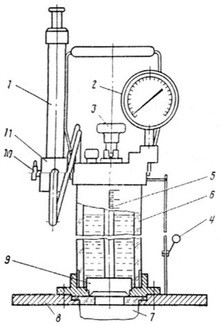
Рис. 1. Общий вид прибора КП-120
При измерении плотности гравийных покрытий прибором КП-120 устанавливают кольцо-кондуктор (входящий в комплект прибора) на выровненную площадку. Затем заполненный водой прибор ставят на кондуктор, рукоятку 10 переводят в положение «Нагнетание», открывают клапан 9 рукояткой 3 и создают давление в измерительном цилиндре. По шкале 5 берут начальный (нулевой) отсчет Н0 воды в цилиндре, после чего, удалив из полости диафрагмы 7 воду, прибор снимают с кондуктора.
Внутри кольца-кондуктора выкапывают лунку диаметром 10 см и глубиной 10 - 15 см (объемом не более 1,5 дм3). Материал из лунки аккуратно вынимают и тщательно взвешивают на весах, получая массу влажного материала Р.
После подготовки лунки на кондуктор снова устанавливают прибор и оператор определяет объем в следующем порядке:
становится на подножки 8 основания прибора;
открывает клапан 9, устанавливает рукоятку 10 золотника в положение «Нагнетание» и насосом создает в измерительном цилиндре давление 0,05 МПа. Контроль давления осуществляют манометром 2. При этом вода перемещается под давлением из цилиндра в полость диафрагмы 7, которая принимает форму вырытой лунки;
при установлении рабочего давления (0,05 МПа) с помощью зеркала 4 берут отсчет установившегося уровня воды Н1 по шкале 5.
Объем лунки, см3, определяют как разность показаний прибора
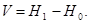
Определение объема в каждой лунке производят один раз.
После каждого определения объема лунки для предотвращения обрыва диафрагмы необходимо удалить из нее воду следующим образом:
перевести рукоятку золотника распределительного устройства 11 в положение «Разряжение»;
создать разряжение в измерительном цилиндре, совершая ручкой насоса 1 возвратно-поступательные движения, при этом вода из диафрагмы 7 засасывается в цилиндр 6;
закрыть тарельчатый клапан 9, поворачивая рукоятку 3 на 90° вокруг оси и перемещая вниз до упора;
снять прибор с кондуктора.
Плотность, г/см3, гравийного материала покрытия во влажном состоянии определяют по формуле
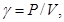
где Р - масса гравийного материала, вынутого из лунки, г; V - объем лунки, см3.
Плотность скелета, г/см3, гравийного материала gфск покрытия вычисляют после определения влажности материала по формуле
где g - плотность влажного материала, г/см3; W - влажность гравийного материала, %.
Влажность гравийного материала может определяться термостатическим, термическим или карбидным методом.
Контроль уплотнения гравийных покрытий осуществляют путем сравнения фактического значения плотности gфск, определяемой по формуле (3), с требуемой (максимальной) gтрск, полученной по методу стандартного уплотнения.
При этом должно удовлетворяться условие
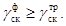
Допустимая величина снижения плотности гравийного покрытия не должна превышать 2 % максимальной.
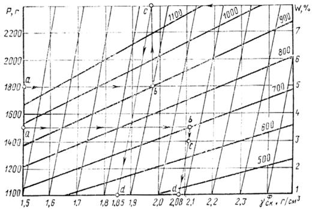
Рис. 2. Номограмма для определения плотности гравийного покрытия (цифры на наклонных прямых обозначают объем измеренной лунки)
Для облегчения подсчета фактической плотности гравийного покрытия gфск составлена номограмма (рис. 2). Она связывает три величины: массу гравийного материала Р, извлеченного из лунки, объем лунки V, определенный прибором КП-120, и влажность W извлеченного из лунки материала.
Фактическую плотность гравийного покрытия gфск определяют следующим образом. Зная массу извлеченного из лунки материала, отмечают ее значение на вертикальной оси (ординате, см. рис. 2) и из этой точки проводят горизонтальную прямую аb до пересечения с наклонной прямой, соответствующей объему лунки, определенному прибором КП-120. Из полученной точки опускают перпендикуляр bс на горизонтальную прямую в точку с, которая соответствует значению влажности извлеченного из лунки материала. Из точки с проводят прямую cd, параллельную наклонным прямым, которые соответствуют различным значениям плотности. Пересечение наклонной прямой сd с нижней горизонталью (абсциссой) дает точку d, численное значение которой соответствует фактическому значению плотности гравийного покрытия.
Пылимость характеризуется уровнем запыленности воздуха, который определяют весовым методом, основанным на просасывании воздуха через фильтры типов АФА-В-10, АФА-В-20.
Аппаратура и реактивы: аспирационный прибор; фильтродержатели; резиновый шланг, секундомер; весы аналитические; эксикатор; пинцет; комплект фильтров АФА-В-10 (АФА-В-20); кронштейны для установки фильтродержателей на автомобиле; хлористый кальций или серная кислота; термометр; психрометр; барометр.
Подготовка к испытанию. На месте отбора проб пыли устанавливают на кронштейны, укрепленные сзади автомобиля (УАЗ-450, РАФ и др.), фильтродержатели таким образом, чтобы плоскость фильтров была параллельно заднему борту автомобиля и перпендикулярна поверхности дороги. На кронштейны устанавливают три (предварительно взвешенных) фильтра (один посередине, два напротив задних колес) на высоте 0,5 - 0,7 м от поверхности покрытия и не ближе 0,8 - 1,0 м от заднего борта автомобиля. Фильтродержатели присоединяют резиновыми шлангами к аспирационному прибору.
Проведение испытаний. Отбор пыли производят при скорости движения автомобиля-лаборатории 40 км/ч. При этом ориентировочную продолжительность отбора проб в зависимости от скорости прокачивания и ожидаемой запыленности воздуха принимают по табл. 1.
В течение всего времени отбора проб поддерживают постоянную скорость прокачивания воздуха через фильтр и скорость движения автомобиля-лаборатории. После окончания взятия пробы фильтры вынимают из фильтродержателей, складывают пополам лицевой стороной внутрь, помещают в пакеты, в которых они находились до взвешивания пробы, и кладут в свободное отделение обоймы. При отборе проб на каждый фильтр ведут отдельную запись в журнале, где указывают дату, место и условия взятия пробы, номер фильтра, скорость и продолжительность отбора пробы (регистрируют чистое время отбора проб без времени, затраченного на развороты, вынужденные остановки и т. п.), место установки фильтра, температуру и давление воздуха.
В лаборатории перед взвешиванием фильтры помещают на 1 - 2 ч в эксикатор, а затем выдерживают в течение 10 - 15 мин в условиях комнатной температуры и влажности. После чего фильтры вынимают из обоймы и пакетов и взвешивают на тех же весах, что и перед отбором проб.
Таблица 1
|
Ожидаемая запыленность воздуха, мг/м3 |
Продолжительность отбора проб, мин, при скорости прокачивания воздуха, л/мин |
||||||
|
100 |
50 |
25 |
10 |
2 |
|
||
|
Непылящие |
£ 3 |
5 |
10 |
20 |
- |
- |
|
|
Пылящие |
3 - 100 |
3 |
5 |
8 |
15 |
- |
|
|
» |
101 - 500 |
1 |
2 |
3 |
5 |
10 |
|
|
» |
> 500 |
0,2 |
0,5 |
0,8 |
1 |
1,5 |
|
Таблица 2
|
К1 |
Температура воздуха, °С |
К1 |
|
|
0 |
1,000 |
+20 |
0,932 |
|
+5 |
0,982 |
+25 |
0,916 |
|
+10 |
0,965 |
+30 |
0,901 |
|
+15 |
0,948 |
+35 |
0,886 |
Таблица 3
|
К2 |
Атмосферное давление, мм рт. ст. |
К2 |
|
|
730 |
0,960 |
760 |
1,000 |
|
735 |
0,967 |
765 |
1,007 |
|
740 |
0,974 |
770 |
1,013 |
|
745 |
0,980 |
775 |
1,020 |
|
750 |
0,987 |
780 |
1,026 |
|
755 |
0,993 |
|
|
Расчет концентрации пыли. Концентрацию пыли Сф, мг/м3, определяют по формуле
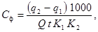
где q1 - масса фильтра до взятия пробы, мг; q2 - масса фильтра после взятия пробы мг; Q - скорость прокачивания воздуха, л/мин; t - продолжительность отбора пробы, мин; К1, К2 - поправочные коэффициенты на температуру (табл. 2) и давление (табл. 3).
|
№ п.п |
Поставщик |
Объем выпуска продукции в год |
||
|
Наименование |
Адрес |
Вид |
Количество, тыс. т |
|
|
1 |
Архангельский ЦБК |
163201, Архангельская обл., г. Новодвинск, ул. Славы, 26 |
ЛСТ |
160 |
|
СЩ |
80 |
|||
|
2 |
Соломбальский ЦБК |
163059, г. Архангельск |
СЩ |
50 |
|
3 |
Котласский ЦБК |
165651, Архангельская обл., пос. гор. типа Коряжма |
ЛСТ |
250 |
|
СЩ |
40 |
|||
|
4 |
Сясьский ЦБК |
187420, Ленинградская обл., Волховский р-н, п/о Сясьстрой |
ЛСТ |
90 |
|
СЩ |
50 |
|||
|
ЛГД |
10 |
|||
|
5 |
Приозерский ЦБК |
188760, Ленинградская обл., пос. Приозерск |
СЩ |
209 |
|
6 |
Выборгский ЦБК |
188918, Ленинградская обл., п. Советский, ул. Заводская, 4 |
СЩ |
60 |
|
7 |
Кондопожский ЦБК |
186200, Карельская АССР, г. Кондопога |
ЛСТ |
50 |
|
СЩ |
80 |
|||
|
8 |
Ляскельский ЦБК |
186804, Карельская АССР, Питкярантский р-н, пос. гор. типа Ляскель |
СЩ |
40 |
|
9 |
Слокский ЦБК |
229081, Латвийская ССР, г. Юрмала, ул. Фабричная, 2 |
ЛСТ |
60 |
|
СЩ |
25 |
|||
|
10 |
Неманский ЦБК |
238710, Калининградская обл., г. Неман |
СЩ |
90 |
|
11 |
Советский ЦБК |
238700, Калининградская обл., г. Советск, Заводской пер. |
СЩ |
160 |
|
12 |
ПО Калининградбумпром |
236001, г. Калининград, ул. Ялтинская, 66 |
ЛСТ |
110 |
|
13 |
Клайпедский ЦБК |
235800, Литовская ССР, г. Клайпеда, ул. Немуно, 2 |
ЛСТ |
10 |
|
14 |
Сокольский ЦБК |
162000, Вологодская обл., г. Сокол, ул. Набережная свободы, 16 |
ЛСТ |
40 |
|
СЩ |
10 |
|||
|
15 |
Сухонский ЦБК |
162100, Вологодская обл., г. Сокол, ул. Беднякова, 3 |
ЛСТ |
20 |
|
СЩ |
50 |
|||
|
16 |
Окуловский ЦБК |
174700, Новгородская обл., г. Окуловка |
СЩ |
30 |
|
17 |
Балахнинский ЦБК |
606406, Горьковская обл., г. Правдинск |
ЛСТ |
60 |
|
СЩ |
60 |
|||
|
18 |
Соликамский ЦБК |
618500, Пермская обл., г. Соликамск-8, ул. Коммунистическая, 21 |
ЛСТ |
90 |
|
СЩ |
60 |
|||
|
19 |
Камский ЦБК |
617070, Пермская обл., г. Краснокамск, ул. Шоссейная, 2 |
ЛСТ |
170 |
|
СЩ |
80 |
|||
|
20 |
Вишерский ЦБК |
618550, Пермская обл., г. Красновишерск, ул. Гагарина, 27 |
СЩ |
70 |
|
21 |
Туринский ЦБК |
623900, Свердловская обл., г. Туринск |
ЛСТ |
30 |
|
СЩ |
20 |
|||
|
22 |
Красноярский ЦБК |
660004, г. Красноярск, ул. 26 Бакинских комиссаров, 8 |
СЩ |
110 |
|
23 |
Амурский ЦБК |
682740, Хабаровский край, пос. гор. типа Амурск |
СЩ |
170 |
|
24 |
ПО Сахалинбумпром |
690000, г. Южно-Сахалинск, Коммунистический пр., 49 |
СЩ |
260 |
Примечания. 1. Объем продукции приведен в пересчете на концентраты с содержанием сухих веществ 50 %.
2. Лигносульфонаты технические типа В отпускают целлюлозно-бумажные комбинаты с требованиями ТУ 13-0281036-05-89.
3. Лигнодор изготавливает и отгружает Сясьский ЦБК в соответствии с ТУ 13-390001-22-86 «Лигносульфонаты технические модифицированные «Лигнодор».
4. Сульфитный щелок (СЩ) следует использовать как местный материал в областях (АССР, краях) его производства с соблюдением требований, изложенных в настоящих Указаниях по его нейтрализации (см. приложение 4).
Подготовка сульфитного щелока к розливу должна производиться на целлюлозно-бумажных комбинатах и включать следующие операции: нейтрализацию содержащихся в щелоке кислот, очистку щелока от продуктов централизации и других взвешенных веществ, охлаждение щелока до температуры 25 - 30 °С.
Для уменьшения расхода нейтрализующего агента можно перед нейтрализацией проводить продувку щелока воздухом. В результате продувки из щелока удаляется значительная часть летучих примесей, в том числе и свободная сернистая кислота.
Нейтрализация кислот необходима для уменьшения коррозионной активности щелока на металл транспортных средств и технологического оборудования.
Нейтрализация щелока может производиться различными материалами: известью, аммиачной водой и др. Чаще всего нейтрализация сульфитных щелоков производится известковым молоком, содержащим 100 - 150 г/л активной гидроокиси кальция (в пересчете на СаО). Известковое молоко готовят из негашеной извести (ГОСТ 9179-77 и 22688-77).
Изготовление известкового молока включает следующие операции: гашение извести, разбавление полученного теста водой, очистку известкового молока.
Измельченную известь (куски 15 - 20 мм) гасят в типовом гасительном аппарате небольшим объемом теплой воды.
Очищают известковое молоко в грязеловушках и направляют в запасные мешалки, где концентрация его доводится до установленных пределов (100 - 150 г/л СаО).
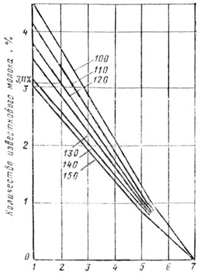
Номограмма для определения количества известкового молока при нейтрализации сульфитного щелока (цифры на прямых обозначают концентрацию известкового молока в г/л)
Количество известкового молока, необходимого для нейтрализации сульфитного щелока, зависит от его концентрации и рН щелока и определяется в процентах к весу щелока по номограмме, представленной на рисунке. Например, для нейтрализации сульфитного щелока, имеющего рН-2, требуется 3,1 % известкового молока концентрацией 120 г/л от веса сульфитного щелока.
Нейтрализацию сульфитного щелока известковым молоком можно осуществить на базе по приготовлению раствора (см. рис. 1 приложения 5).
В исключительных случаях при рН более 3,5 сульфитный щелок можно применять без нейтрализации, но с обязательным его охлаждением перед загрузкой в транспортные средства до температуры 20 °С.
Приготовление растворов с заданным содержанием сухих веществ производят:
на установках по приготовлению растворов;
в цистернах распределительных средств, имеющих систему для циркуляции жидкости.
Установка для приготовления растворов (рис. 1) состоит из: смесителя 1 - цистерны объемом 10 м3; насосной установки 8; склада готовой продукции 4 - цистерны объемом 50 - 100 м3; парообразователя 3; эстакады 12 и системы трубопроводов. Смеситель и цистерна для хранения должны быть, оборудованы паровой системой для разогрева растворов до температуры 60 - 80 °С.
Рис. 1. Схема установки для приготовления обеспыливающих растворов
Порядок приготовления растворов следующий:
лигносульфонат сливают из транспортных средств в смеситель 1 и разогревают до температуры 60 - 80 °С. Затем в смеситель закачивают необходимое количество воды, которая подается из скважины 9 по трубопроводам;
перемешивают воду и ЛСТ в течение 10 - 15 мин насосом 8 за счет циркуляции раствора в системе смеситель-насос-смеситель. При этом открывают задвижки 10 и 11 и закрывают задвижки 5, 6 и 7. Перемешивание раствора производится одновременно с подачей в смеситель пара, который через открытый вентиль 2 попадает в специальный распределитель, установленный внутри смесителя.
Температуру раствора поддерживают в пределах 60 - 80 °С.
Приготовленный раствор при открытых задвижках 10, 5 или 10, 6 и закрытых 11 и 7 насосом 8 подается на склад готовой продукции 4 или в цистерны распределительной машины.
Приготовление раствора в распределительных средствах производят в следующей последовательности:
в цистерну машины заливают необходимое количество воды для получения раствора заданной концентрации;
загружают в цистерну ЛСТ при включенной циркуляционной системе;
перемешивают ЛСТ с водой в течение 10 - 15 мин.
Потребный расход ЛСТ и воды для получения необходимого количества раствора с заданным содержанием сухих веществ определяют по номограмме, представленной на рис. 2. Например, для приготовления 1 м3 раствора с 30 %-ным содержанием сухих веществ из ЛСТ с 50 %-ным содержанием сухого вещества требуется 0,55 м3 ЛСТ и 0,45 м3 воды.
Рис. 2. Номограмма для определения количества ЛСТ при приготовлении 1 м3 раствора (цифры на прямых обозначают содержание сухих веществ в ЛСТ)
О водостойкости лигносульфонатов (ЛСТ) судят по скорости фильтрации воды через образец песка, обработанного испытуемым материалом.
Аппаратура и материалы: прибор для определения водостойкости лигносульфатов технических (рис. 1); уплотнитель (рис. 2); весы технические типа ВТУ, ГОСТ 23711-79; воронка стеклянная В-100-150´С, ГОСТ 23932-78; мерный цилиндр вместимостью 250 мл, ГОСТ 23932-79; стакан мерный вместимостью 500 мл, ГОСТ 23932-79; фильтровальная бумага или обеззоленные фильтры, белая лента, ТУ 6-09-1678-77; секундомер; миска алюминиевая; ложка, нитки; песок, ГОСТ 8736-85*; вода водопроводная, ГОСТ 2874-82.
Рис. 1. Прибор для определения водостойкости лигносульфонатов технических
Рис. 2. Уплотнитель:
1 - ручка-фиксатор; 2 - направляющий стержень; 3 - ударник; 4 - уплотняющая плита
Описание прибора. Прибор представляет собой рабочий цилиндр 3 (см. рис. 1) из оргстекла с внутренним диаметром 5 см и высотой 20 см. Цилиндр имеет сетчатое дно (dотв = 0,25 мм), которое закрыт кружком фильтровальной бумаги. На наружной стороне рабочего цилиндра от нижнего его конца сделана градуировка через 5 мм на всю высоту цилиндра. Рабочий цилиндр закреплен на штативе 1 и установлен на металлической сетке 4 (d = 12 см, dотв = 2 мм), расположенной сверху воронки 5, которая также закреплена на штативе.
В рабочий цилиндр вверх дном погружен мерный цилиндр 2, закрепленный на штативе 1. Мерный цилиндр выполняет роль Мариоттовского сосуда и установлен так, что его открытый край находится на расстоянии 17 см от дна рабочего цилиндра. Под воронкой расположен стакан 6 для сбора и учета фильтрата. Для приготовления (уплотнения) образца в состав прибора входит направляющий стержень с цилиндрической гирей массой 0,5 кг.
Проведение испытаний. Воздушно-сухой песок в количестве 600 г помещают в алюминиевую миску. К нему добавляют 2 % воды и тщательно перемешивают в течение 1 - 2 мин до получения однородной смеси. В увлажненный песок вводят ЛСТ в количестве 6 % (в пересчете на 50 % содержание сухих веществ от массы сухого песка) и снова тщательно перемешивают в течение 5 мин до получения однородной смеси. Полученную смесь в количестве 500 г загружают в рабочий цилиндр 3 с сетчатым дном, покрытым кружком фильтровальной бумаги. Смесь загружают в три слоя с уплотнением каждого 25 ударами цилиндрической гири массой 0,5 кг, падающей по направляющему стержню с высоты 300 мм (см. рис. 2). Общее количество ударов 75. Высота столба должна быть около 15 см.
Приготовленный образец выдерживают при комнатной температуре (10 - 20 °С) в течение 3 ч, при этом относительная влажность воздуха должна быть в пределах 40 - 70 %.
По истечении 3 ч над исследуемым образцом в рабочем цилиндре создают постоянный напор воды h = 2 см. Для этого мерный цилиндр 2 (см. рис. 1) на 250 мм наполняют до краев водой (340 мл) с температурой 20 °С ± 1°С и закрывают кружком фильтровальной бумаги с прикрепленной к нему ниткой. Затем переворачивают мерный цилиндр вверх дном и закрепляют на штативе так, чтобы края были на 2 см выше поверхности исследуемой массы в рабочем цилиндре. После закрепления мерного цилиндра кружок фильтровальной бумаги быстро выдергивают за нитку, одновременно включая секундомер. Момент появления фильтрата в виде капли на сетке воронки означает конец процесса впитывания и начало процесса фильтрации. Конец процесса фильтрации определяют по появлению последней капли на сетке воронки, одновременно фиксируя это остановкой секундомера. По окончании фильтрации замеряют объем собранного раствора в стакане для сбора и учета фильтрата, определяют время впитывания и фильтрации воды через образец.
Обработка результатов. За величину показателя водостойкости X, см/мин, принимают среднее арифметическое значение трех параллельных измерений скорости впитывания и фильтрации воды через обработанный образец песка и рассчитывают по формуле
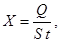
где Q - количество собранного фильтрата, см3; t - время впитывания и фильтрации воды, мин; S - площадь поперечного сечения рабочего цилиндра, см2.
Допускаемое расхождение между тремя параллельными определениями не должно превышать 5,0 %.
_____________
5. Гранулометрический состав частиц: 2 - 0,5 мм - 0,4 %; 9,5 - 9,25 мм - 41,5 %; 0,25 - 0,1 мм - 55,6 %; 0,1 - 0,05 мм - 0,3 %; пыль, глина - 2,2 %.